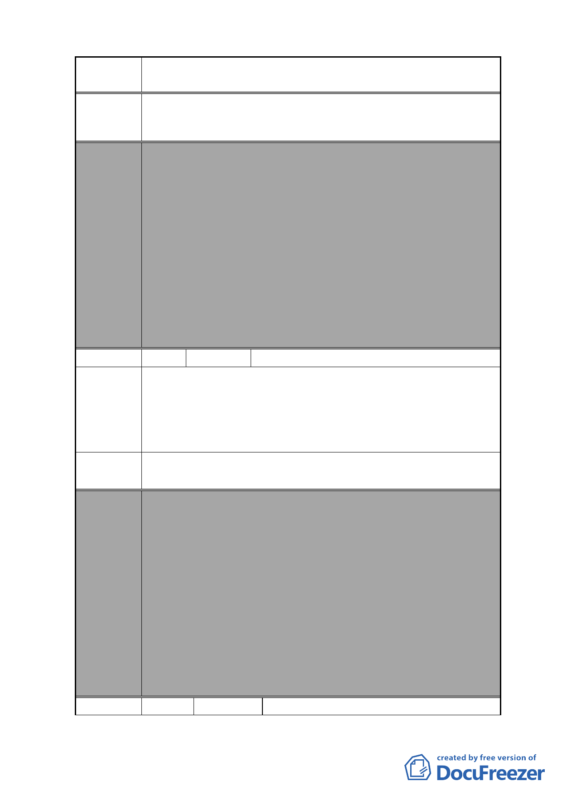

案名
變更復興北路與長安東路口東北側第三種住宅區為第三種住
宅區（特）細部計畫案
等）之廢除或移設。
委員會
決議
編號
陳情理由
建議辦法
本案除以下幾點應再作修正外，其餘依市府本次會議所送修
正計畫書及專案小組審查意見回應資料內容通過。
1.本案有關都市設計管制規定，名稱請統一為都市設計管制
「準則」。
2.計畫書第 31 頁（四）第 1 點有關地下開挖率規定，請予刪
除，依現行市府通案處理原則辦理。
3.計畫書「其他」項內增列「所申請之容積獎勵面積後續於
完成都市設計審議核備及領取建築執照後不得任意變更設
計，如後續確有需要辦理變更設計者，則該部分獎勵面積
須重新審查，若已完成超過部分之獎勵容積樓地板施工
者，則不予核發該部分之使用執照」等文字敘述，以為周
延。
6 陳情人 張議員茂楠、洪議員健益、許議員淑華
「變更復興北路與長安東路口東北側第三種住宅區為第三種
住宅區（特）細部計畫案」經附近居民極力反對（附上居民
連署書）（連署意見如編號 7）。
本案並未依規定確實辦理公開展覽程序，公展程序有明顯瑕
疵，請重新辦理。
請將週邊土地納入規劃辦理更新改建。
委員會
決議
編號
本案除以下幾點應再作修正外，其餘依市府本次會議所送修
正計畫書及專案小組審查意見回應資料內容通過。
1.本案有關都市設計管制規定，名稱請統一為都市設計管制
「準則」。
2.計畫書第 31 頁（四）第 1 點有關地下開挖率規定，請予刪
除，依現行市府通案處理原則辦理。
3.計畫書「其他」項內增列「所申請之容積獎勵面積後續於
完成都市設計審議核備及領取建築執照後不得任意變更設
計，如後續確有需要辦理變更設計者，則該部分獎勵面積
須重新審查，若已完成超過部分之獎勵容積樓地板施工
者，則不予核發該部分之使用執照」等文字敘述，以為周
延。
7 陳情人 臺北市議會許議員淑華轉松山區中正里
- 79 -